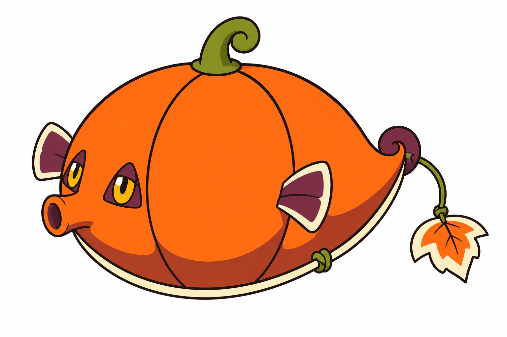
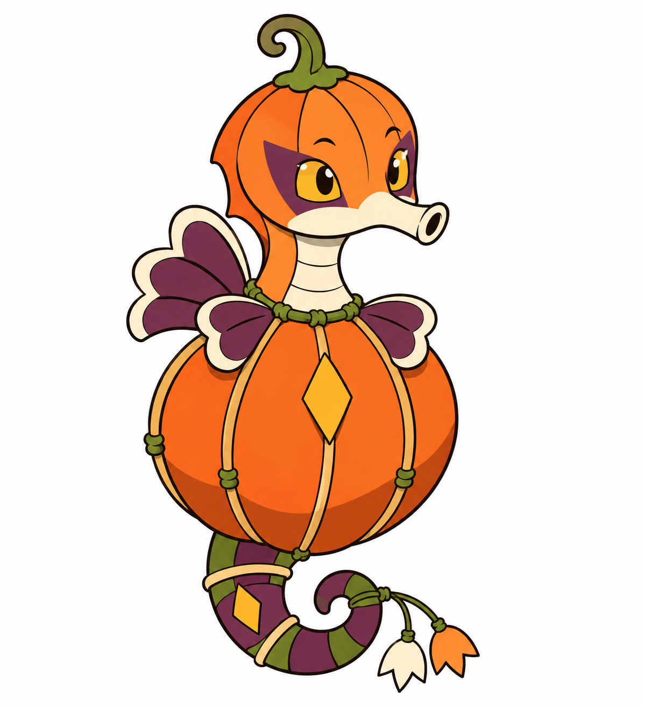
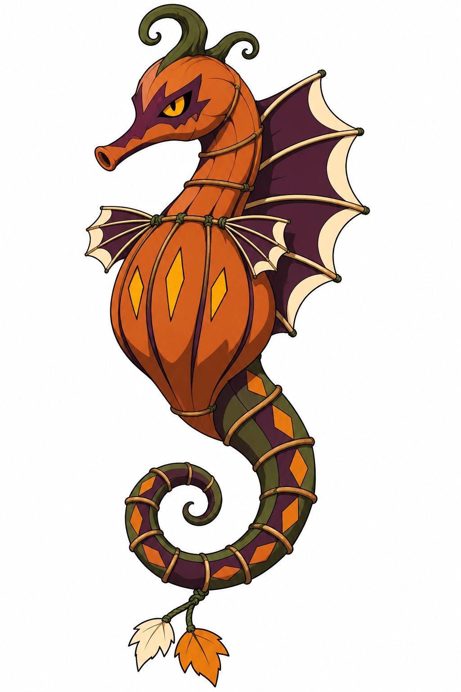
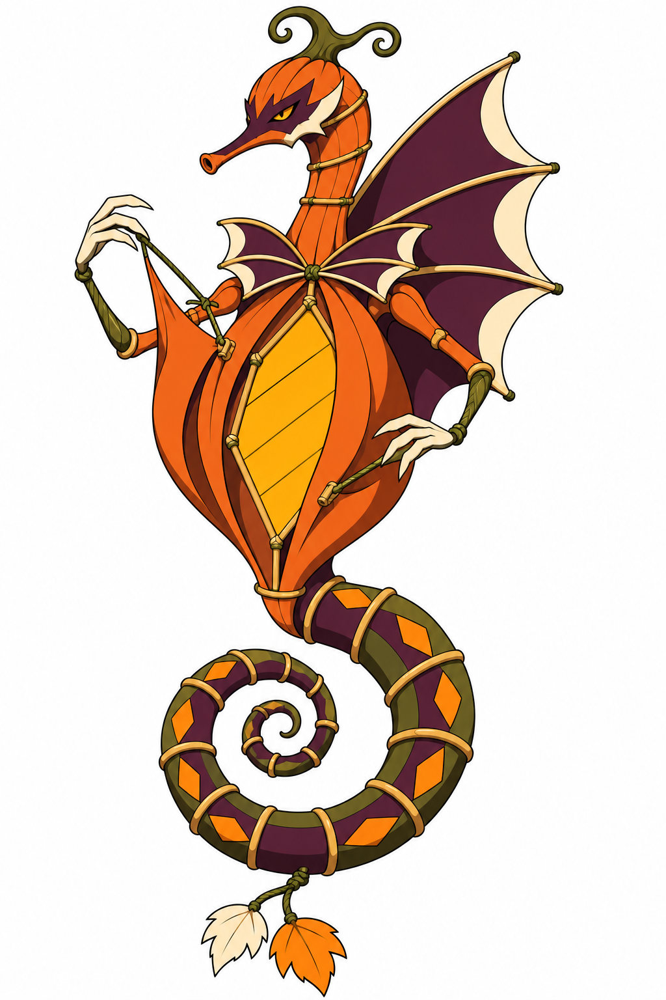

Pevidim · Bebê — Aprovado

Aprende a se orientar pelo movimento da própria rabiola.
Ação: Perceber
Limitação proposta: Ainda não controla a abertura da lanterna.
BriefQuatro concepts aprovados visualmente. Nomes e mecânicas propostos; sem integração.
Decisões e pesquisa · Fontes · Comparativo
Aprende a se orientar pelo movimento da própria rabiola.
Ação: Perceber
Limitação proposta: Ainda não controla a abertura da lanterna.
Brief
A primeira janela de papel começa a funcionar como sinal.
Ação: Sinalizar
Limitação proposta: Um sinal simples e pouco controlado.
Brief
Aprende quando mostrar seus sinais em vez de reagir a tudo.
Ação: Atrair atenção
Limitação proposta: Nadadeiras pequenas limitam manipulação dos gomos.
Brief
Passa a controlar as próprias janelas com cordas e mãos-nadadeiras.
Ação: Revelar e ocultar
Limitação proposta: Precisa coordenar cauda, abertura dos gomos e direção da luz.
Brief